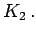
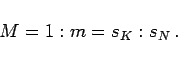
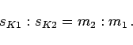
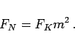
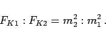

Inhalt Index DeskTop Bronstein

 Geometrie Ebene Trigonometrie Geodätische Anwendungen Geodätische Koordinaten
Geometrie Ebene Trigonometrie Geodätische Anwendungen Geodätische Koordinaten


Maßstab M nennt man im Karten- und Zeichenwesen das Verhältnis von Strecken sK1 in einem Koordinatensystem K1 relativ zu einer Strecke sK2 in einem anderen Koordinatensystem 
|  | (3.107a) |
Für zwei Strecken sK1,sK2 mit verschiedenen Modulen m1, m2 gilt:
|  | (3.107b) |
|  | (3.108a) |
Für zwei Flächen F1, F2 mit verschiedenen Modulen m1,m2 gilt:
|  | (3.108b) |